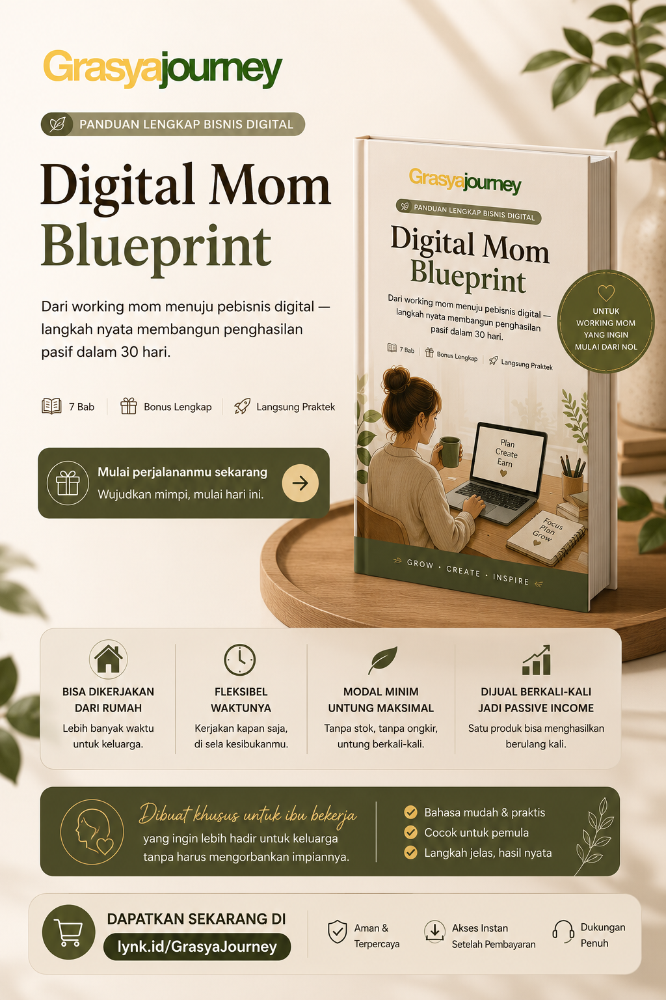
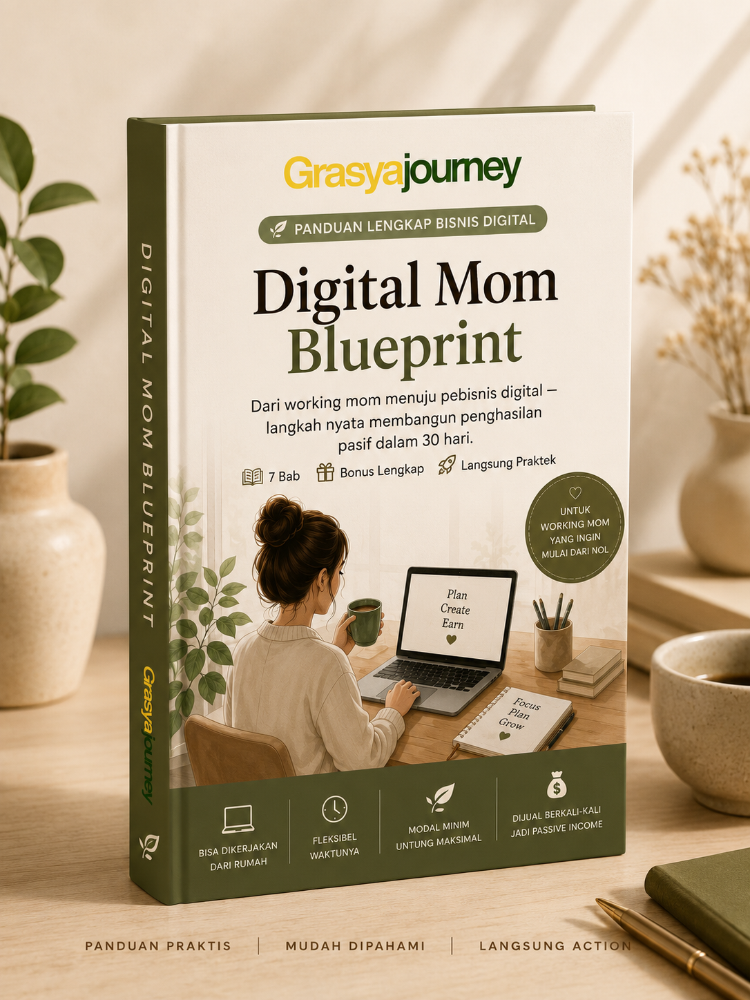

Panduan praktis khusus untuk Working Mom yang ingin mulai dari nol tanpa resign, tanpa stok barang, dan tetap bisa membagi waktu untuk keluarga.

Solusi membangun penghasilan tambahan yang lebih fleksibel untuk ibu bekerja.
Tidak perlu menyimpan barang fisik.
Bisa mulai hanya dengan smartphone.
Dikerjakan setelah jam kerja atau saat anak tidur.
Produk dibuat sekali, dijual berkali-kali.

Bangun aset digital yang bisa menghasilkan bahkan ketika kamu sedang bekerja ataupun menikmati waktu bersama keluarga.
Dapatkan Digital BlueprintTidak. Semua dijelaskan langkah demi langkah sehingga cocok untuk pemula.
Tidak. Digital Blueprint dirancang khusus untuk Working Mom yang tetap bekerja.